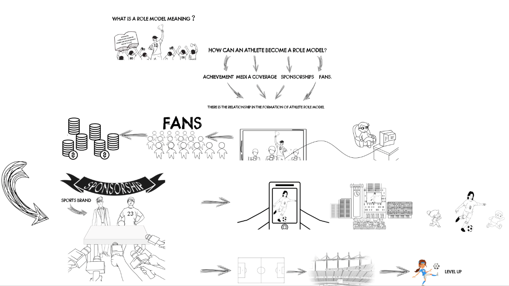

What is role model?
According to Cambridge Dictionary, ‘role model’ is a person who someone admires and whose behaviour they try to copy. An athlete role model is supposed to be someone who is inspirational - by what he or she achieved in their sport, and how he or she have inspired people off the field. An ideal role model can provide direction in sport and in life.
Numerous studies have shown that humans learn through modeling others. As these experiences accumulate through adolescence, teens can learn what socially considered beneficial behavior is and what is not (G4 Athlete, 2012). Role models play an important role in stimulating individuals to identify and to imitate patterns of interpretation and behaviour, especially to children and teenager (Biskup and Pfister, 1999). They provide a way for children and teenager to find their way in their environment and society. They also help teenager look for norms and values that can deal with typical adolescent conflicts. In the context of the development of gender identity, role models also provide a direction for different gender behavior patterns. Thus, as for the issue the Adidas brief mentioned, more and more young girls are losing their interest in sports and dropping out of sports, identify and encourage more athlete role model, especially female role model in sports may help address this loss of interest and encourage young people to participate in sports.
Nowadays, it is not uncommon for sports stars to become celebrities and role models. Also, role modelling affect inspired by the athlete, people take up or increase their frequency of sporting activities (Ishigami,2019). However, when people think about role models, women aren’t always the first to come to mind. Many researches and data have shown that there is a gender imbalance in sports among teenagers: Collaborative research from Women in Sport and the Youth Sport Trust suggests that only 56% of girls recognize that being physically active is important, compared to 71% of boys, with 45% of girls seeing the relevance of Physical Education lessons to their lives compared to 60% of boys. Disturbingly, the pivotal age at which girls start to lose interest in physical activity is just seven years old (Jeanette ,2018). For this phenomenon, many people argue that setting more female role models can go some way in proving to girls that lifelong physical activity is as important for them as it is for boys and help address this loss of interest (Jeanette,2018). However, it is no denying that there is still a shortage of female role model in sports. Actually, compared to male role model, the shortage of female role models within the sport field is widely known in international strategies and research reports.
According to Marianne Meiera (2015), this condition mainly based on the following two factors: ‘Availability’ and ‘Status’. The availability hypothesis suggests that, due to the unavailability and scarcity of female role models, women and girls tend to choose male role models. However, even with good female athletes, there is no guarantee that girls and women will choose female role models. So, the opinion that a society lacks female role models is actually more about the invisibility of women in popular culture than the idea that there are no female role models.
As for the ‘Status’ of female role model, it is also related to the ‘invisibility’. Female athletes are often socially marginalized and belittled by media coverage which reduces their status and attractiveness as role model. Media tend to ignore female athlete in so-called ‘traditionally male’ sports Overall, the lack of female role models is largely due to their invisibility which caused by mass media.
Here is a further illustration of the relationship which is mentioned above between female role model, media and other factors. There is a ‘vicious circle’ in the formation of female role model regarding the lack of media coverage, resources, success, sponsorships, and fans which again seems to justify limited media coverage for female role model (Biskup and Pfister, 1999).
Even if sportswomen perform extremely well, the general public and sponsors will not react to marginal media attention. Non-existent or low-quality media reports reinforce traditionally biased female sport coverage, and thus also determine the availability of female role model (Meier, 2015).
But for male athlete, since the traditional concept of men dominate sport and the potential bias toward men in sports, they relatively do not need to worry about being invisible, as long as they perform well. Man play well on the game, he can not only win a medal, but also more media attention, resources, sponsorships, fames and fans. In the context of this kind of inequality, male athletes receive more attention than female athletes. Then, the availability of male role model is more prominent than that of female role model. Overall, male role models are on the rise while female role models are still invisible.
Aiming at the phenomenon of lacking female role models in sports and the factors that affect the lack of female role models proposed in literatures, we then carried out our research and tried to confirm the above opinions from our data.